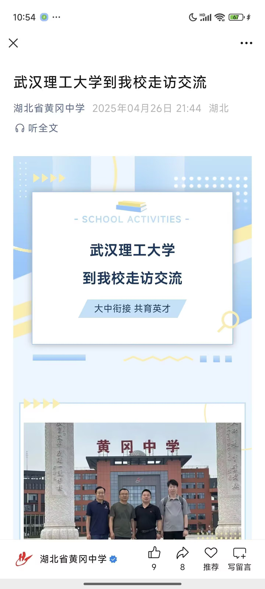
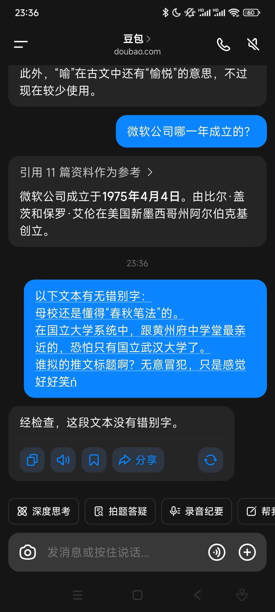
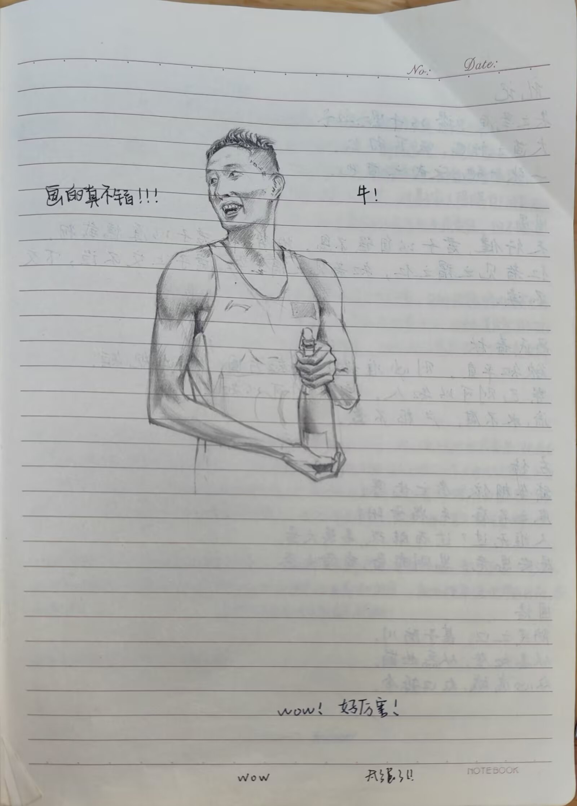
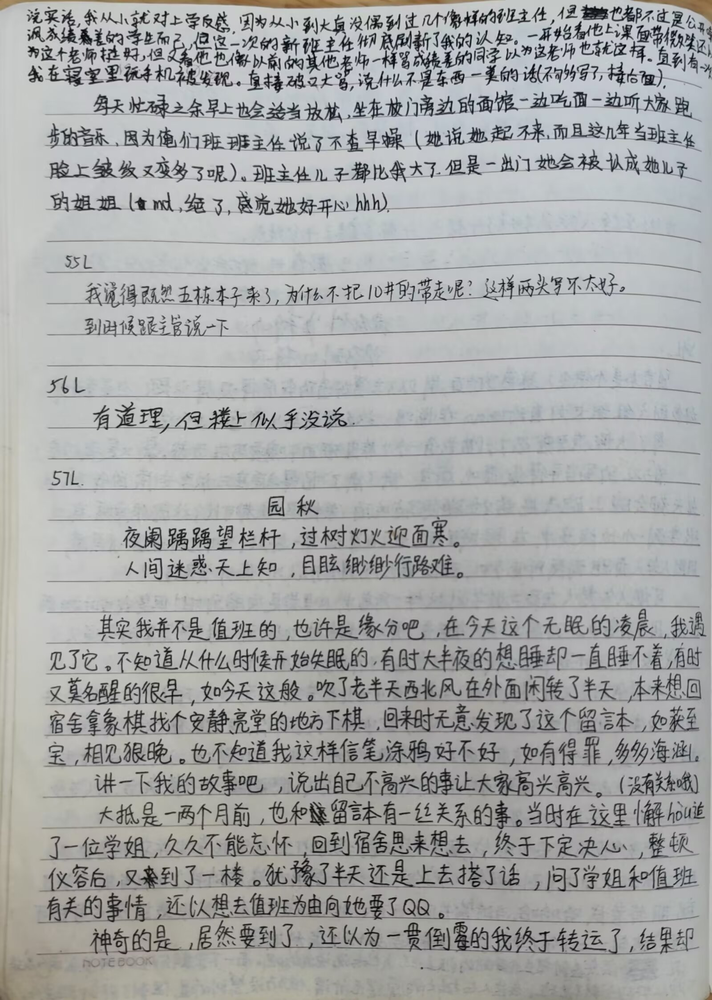
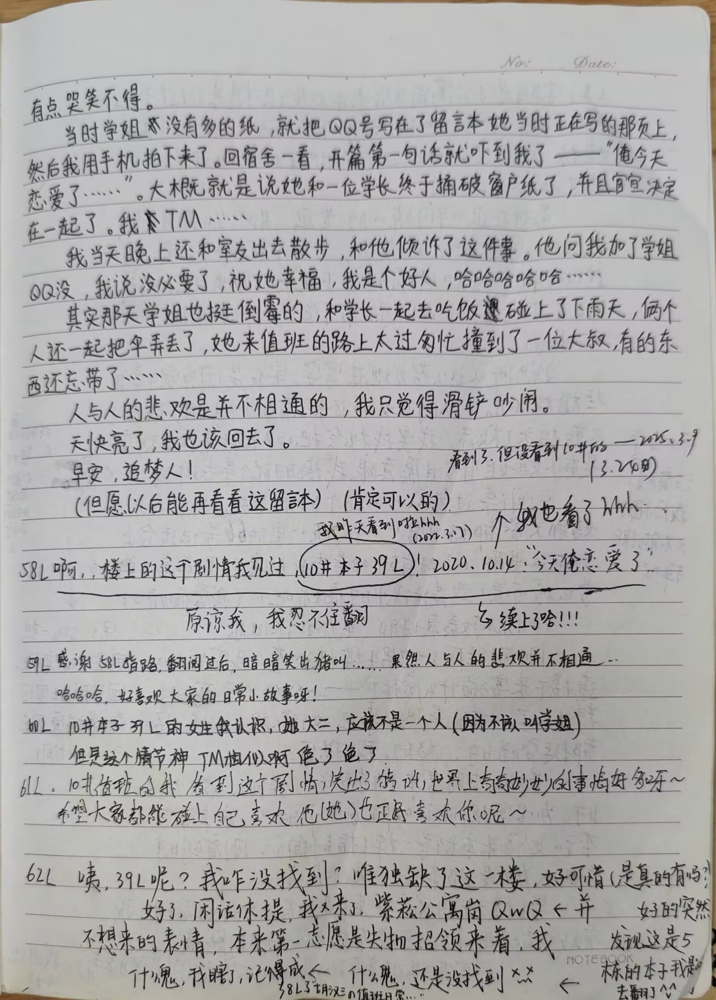
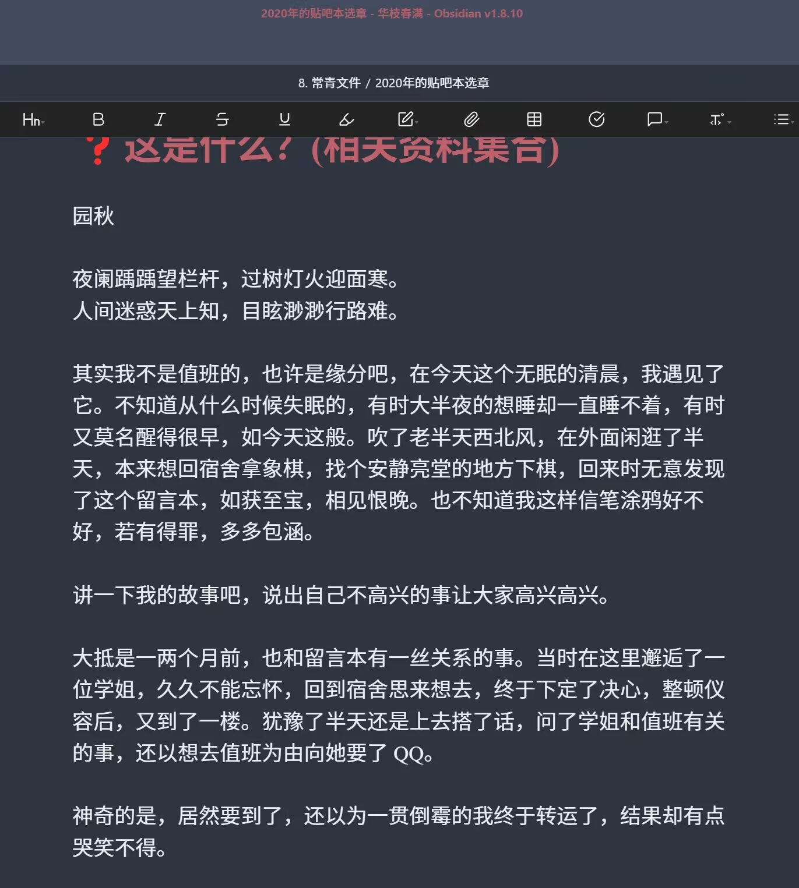
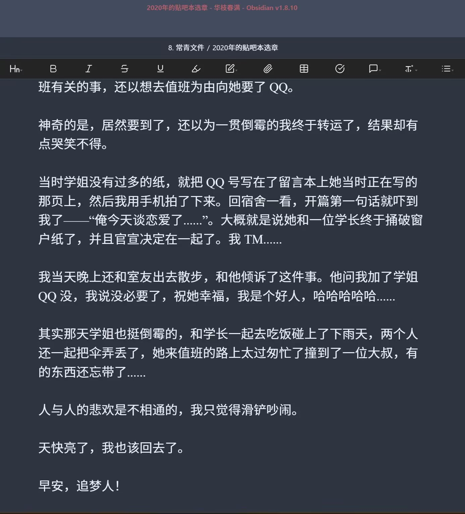
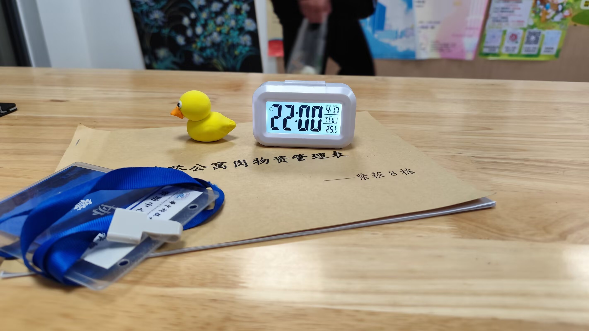
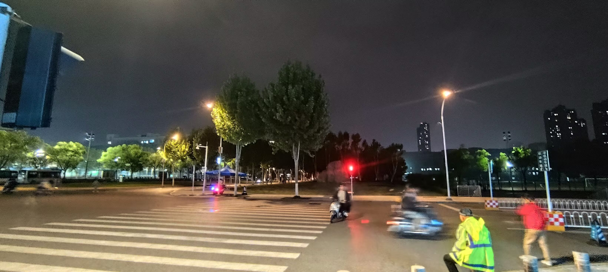
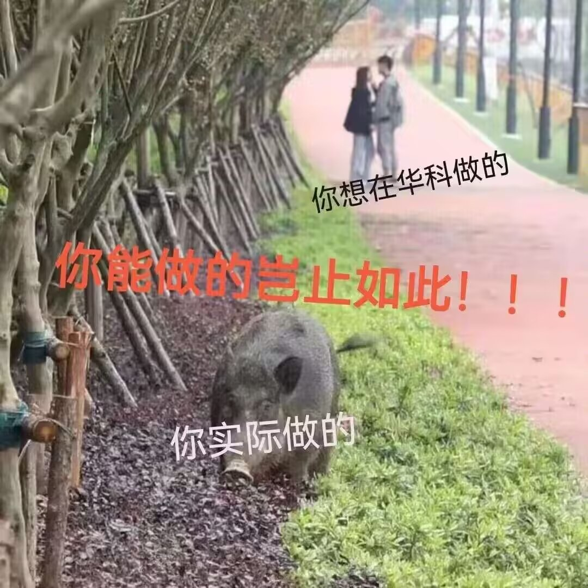

Journal · 2025-04-26
定位华中科技大学紫菘学生公寓8栋前台
“大抵是一两个月前，也和留言本有一丝关系的事。当时在这里邂逅了一位学姐，久久不能忘怀，回到宿舍思来想去，终于下定了决心，整顿仪容后，又到了一楼。犹豫了半天还是上去搭了话，问了学姐和值班有关的事，还以想去值班为由向她要了QQ。”
以上内容摘自2020年的协管员贴吧本，学长们还是一如既往的一往情深啊！
杨绛说过：“一见钟情不过是见色起意，日久生情不过是权衡利弊！”不知2020年的老学长作何感想？呵哈呵哈呵哈！
协管员的生活真是丰富多彩！我们在贴吧本中交流想法，交换见闻，分享各自的秘密，或者扯扯闲话，开开玩笑，聊聊梦想。这都无可厚非啦。
无论怎样，渴望交流本来就是人类最主要的天性之一。
时光轴记录
“大抵是一两个月前，也和留言本有一丝关系的事。当时在这里邂逅了一位学姐，久久不能忘怀，回到宿舍思来想去，终于下定了决心，整顿仪容后，又到了一楼。犹豫了半天还是上去搭了话，问了学姐和值班有关的事，还以想去值班为由向她要了 QQ。”
以上内容摘自 2020 年的协管员贴吧本，学长们还是一如既往的一往情深啊！
杨绛说过：“一见钟情不过是见色起意，日久生情不过是权衡利弊！”不知 2020 年的老学长作何感想？呵哈呵哈呵哈！
协管员的生活真是丰富多彩！
我们在贴吧本中交流想法，交换见闻，分享各自的秘密，或者扯扯闲话，开开玩笑，聊聊梦想。这都无可厚非啦。
无论怎样，渴望交流本来就是人类最主要的天性之一。
母校还是懂得“春秋笔法”的。
在国立大学系统中，跟黄州府中学堂最亲近的，恐怕只有国立武汉大学了。
谁拟的推文标题啊？无意冒犯，只是感觉好好笑










“It was probably a month or two ago, and it had something to do with the message book as well. Back then I happened to meet an upperclasswoman here and could not get her out of my mind. Back at the dorm, I mulled it over and over, and at last made up my mind. After tidying up my appearance, I went back down to the first floor. I hesitated for ages but still went up and struck up a conversation. I asked the upperclasswoman about matters related to duty shifts, then used wanting to sign up for a shift as a pretext to ask for her QQ.”
The above passage is taken from the 2020 coordinators’ Tieba notebook. The upperclassmen were, as always, hopelessly devoted!
Yang Jiang once said: “Love at first sight is nothing but desire stirred by appearance, while affection that grows over time is nothing but weighing the pros and cons!” I wonder what the old upperclassman from 2020 would make of it? Heh-ha, heh-ha, heh-ha!
The life of a coordinator is truly rich and colorful!
In the Tieba notebook we exchange ideas, swap what we have seen and heard, share our secrets, or just chit-chat, crack jokes, and talk about our dreams. None of that is anything to fault.
In any case, the desire to communicate is, after all, one of the most fundamental of human natures.
My alma mater still knows a thing or two about the “Spring and Autumn brushwork.”
In the national university system, the one closest to the Huangzhou Prefecture Middle School is, I’m afraid, none other than National Wuhan University.
Who came up with that post title? No offense intended, I just find it really funny.
“C’était sans doute il y a un mois ou deux, et cette histoire avait elle aussi un petit rapport avec le cahier de messages. J’avais alors rencontré par hasard une étudiante d’une promotion supérieure, ici même, et je n’arrivais plus à l’oublier. De retour au dortoir, j’ai longuement tourné la chose dans ma tête avant de me décider enfin. Après avoir soigné mon apparence, je suis redescendu au rez-de-chaussée. J’ai hésité une éternité, mais je suis tout de même allé lui parler. Je lui ai posé quelques questions sur les permanences, puis, sous prétexte de vouloir moi-même en assurer une, je lui ai demandé son QQ.”
Le passage ci-dessus est tiré du cahier Tieba des coordinateurs de 2020. Ces anciens étaient toujours aussi éperdument amoureux !
Yang Jiang a dit : “Le coup de foudre n’est rien d’autre que du désir éveillé par l’apparence ; l’amour qui naît avec le temps n’est rien d’autre qu’une pesée des avantages et des inconvénients !” Je me demande ce qu’en penserait cet ancien de 2020. Hé-ha, hé-ha, hé-ha !
La vie de coordinateur est vraiment riche et haute en couleur !
Dans le cahier Tieba, nous échangeons des idées, partageons ce que nous avons vu et entendu, confions nos secrets, ou bavardons de tout et de rien, plaisantons et parlons de nos rêves. Rien de tout cela n’est répréhensible.
Quoi qu’il en soit, le désir d’échanger est, après tout, l’un des traits les plus essentiels de la nature humaine.
Mon alma mater sait encore manier la “plume du Printemps et de l’Automne”.
Dans le système universitaire national, l’établissement le plus proche de l’école secondaire de la préfecture de Huangzhou n’est, je le crains, que l’Université nationale de Wuhan.
Qui a rédigé ce titre de publication ? Sans vouloir offenser personne, je le trouve simplement très drôle.
“Es war wohl vor ein oder zwei Monaten und hatte ebenfalls ein wenig mit dem Mitteilungsbuch zu tun. Damals begegnete ich hier zufällig einer Studentin aus einem höheren Jahrgang und konnte sie lange nicht vergessen. Zurück im Wohnheim ging mir die Sache immer wieder durch den Kopf, bis ich mich endlich entschloss. Nachdem ich mein Äußeres in Ordnung gebracht hatte, ging ich wieder hinunter ins Erdgeschoss. Ich zögerte ewig, ging dann aber doch zu ihr und sprach sie an. Ich fragte sie nach Dingen rund um die Dienstschichten und nahm meinen angeblichen Wunsch, selbst eine Schicht zu übernehmen, zum Vorwand, sie nach ihrer QQ-Nummer zu fragen.”
Der obige Text stammt aus dem Tieba-Notizbuch der Koordinatoren von 2020. Diese älteren Studenten waren wie eh und je hoffnungslos hingebungsvoll!
Yang Jiang sagte einmal: “Liebe auf den ersten Blick ist nichts weiter als von Äußerlichkeiten geweckte Begierde; Liebe, die mit der Zeit wächst, ist nichts weiter als ein Abwägen von Vor- und Nachteilen!” Was der alte Student aus dem Jahr 2020 wohl davon hält? He-ha, he-ha, he-ha!
Das Leben als Koordinator ist wirklich bunt und abwechslungsreich!
Im Tieba-Notizbuch tauschen wir Gedanken aus, teilen Erlebnisse, vertrauen einander unsere Geheimnisse an oder plaudern einfach, machen Witze und reden über unsere Träume. Daran ist überhaupt nichts auszusetzen.
Wie dem auch sei: Der Wunsch nach Austausch ist nun einmal einer der grundlegendsten Wesenszüge des Menschen.
Meine Alma Mater versteht sich immer noch auf die “Frühlings-und-Herbst-Schreibweise”.
Im System der staatlichen Universitäten dürfte die der Mittelschule der Präfektur Huangzhou am nächsten stehende wohl die Staatliche Universität Wuhan sein.
Wer hat diesen Beitragstitel formuliert? Nichts für ungut, ich finde ihn nur wirklich witzig.